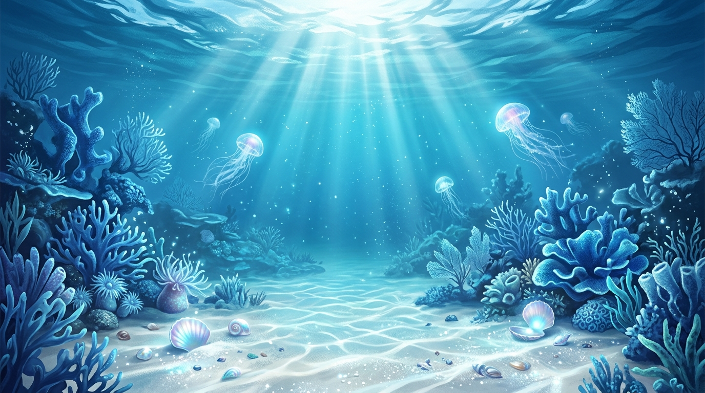

A Journey Through The Blue
Before you enter this little ocean, I need to make sure it's really you.
Somewhere Beyond the Blue.
A little journey, made just for you.
"A little world made from everything that makes you, you."

An ocean built from your favorite corners, not generic wishes.
Follow the winding underwater trail alongside The Blue Whale Guide, open any chapter in any order, uncover quiet notes tucked inside every destination, and rise toward the final tide whenever you feel ready.
-
Guided by The Blue Whale
Swims with you from the Jakarta skyline to Kaliurang mist. Click the whale anytime for a quiet hint.
-
Two Ways to Explore
Walk the illustrated winding Adventure Trail or pan the live 3D Ocean Tracker console at your own pace.
-
Keepsakes Waiting Beneath
Sixteen polaroid memories, six seabed envelopes, a six-star constellation, and a letter sealed in glass.
The Story Map